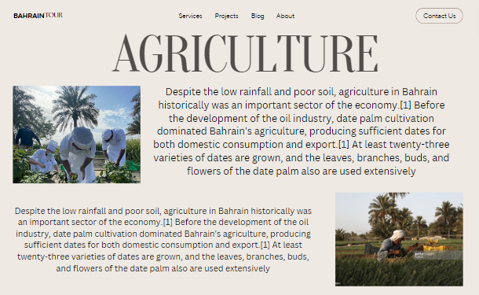

Our header is consistent within all the webpages, (same id and classes in css to make sure) as well as the footer section in the activities pages. However the body was different in every page, when it came to sizing and information/ media/ photos to provide a closer view on each activity and connect with it differently.
Our original aim was to keep all the webpages in a neutral tone to maintain the historic vibe of the website as its main purpose was to connect with Bahrain's history. We eventually decided to change the background of the body for all the web pages besides the main. The background image still showcases a historic vibe as it represents a photo of an old paper, again representing the activities that had played a vital role in the creation and economy of the Bahrain we know today.
The javascript is an external sheet to avoid redundancy in our coding style, all the sub web pages have the same function that executes on loading to find out whether the user submitted the form. The main page follows one function that checks the data and validates their existence
we choose to represent the title in a bold font along with a small description of what we are as an orgranisation and what we want people to precieve
different photo sizes to appeal the user, and the photo in the middle is bigger to create a pattern